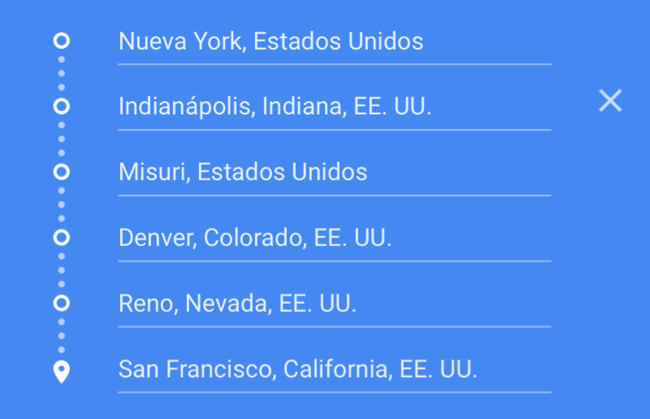
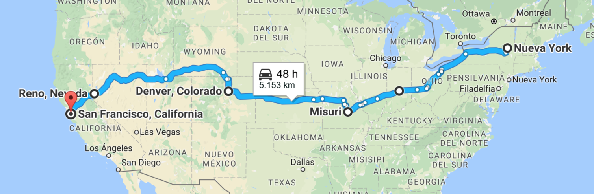

La ruta de costa a costa
Esta ruta es menos transitada debido a sus mas de 5000 kilometros de carreteras interminables que recorren de una costa a otra de Estados Unidos.
Empezamos en Nueva York, la cuidad de los rascacielos. Recomendamos pasar un par de días o tres entre sus impresionantes calles llenas de los edificios mas altos del mundo.
El siguiente destino de Camino a San Francisco es Indianapolis, cuidad conocida por sus increíbles bosques repletos de sequoias.
Continuamos por Misuri hasta llegar a Denver, Colorado, donde no podemos perdernos sus fantásticos paisajes en Colorado Springs y dormir una noche a la luz de la luna en su extenso desierto. Llegamos a San Francisco.

Itinerario
Mapa
